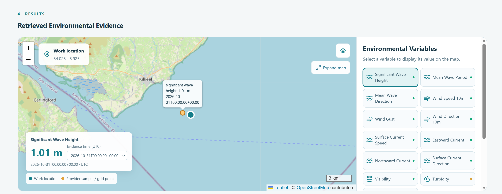
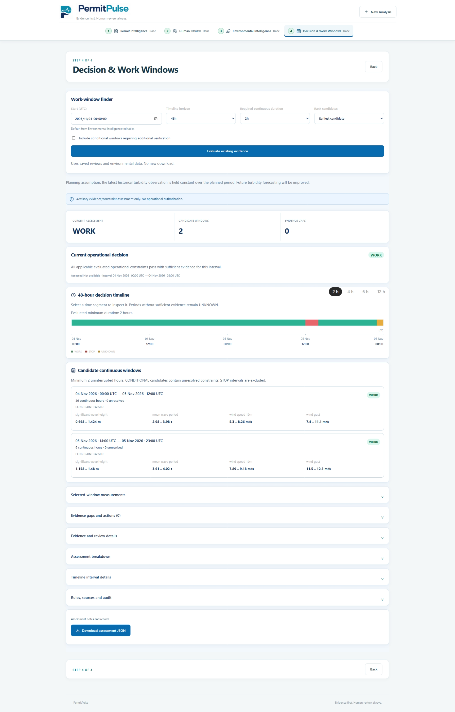

Background
Our team developed PermitPulse for the Copernicus Marine Hackathon. The prototype brings marine permit conditions and ocean and weather evidence into one workflow so reviewers can assess candidate time windows for offshore work.
Team
I worked with Aras Mosafaei and Ann Kristin Gans on Team 11.
My contribution
I implemented source checks that compare AI-extracted quotes with the original PDF and retain source evidence for review. I wrote regression tests for ambiguous and unmatched citations and built a FastAPI and React review step that requires reviewers to confirm permit interpretations and applicability before assessing work windows.
Outcome
The prototype presents marine and weather evidence on a map and evaluates it against reviewed permit conditions. Reviewers can inspect the evidence behind candidate work windows and see where required data are missing.
Project Demo

